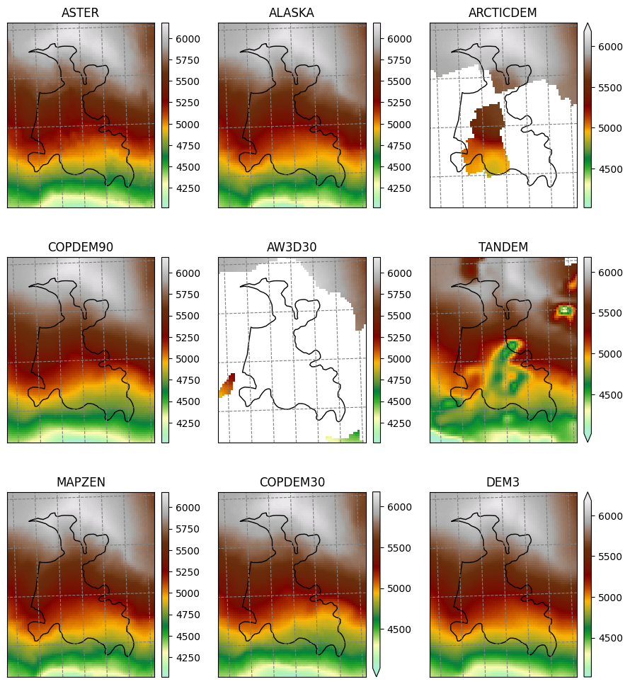
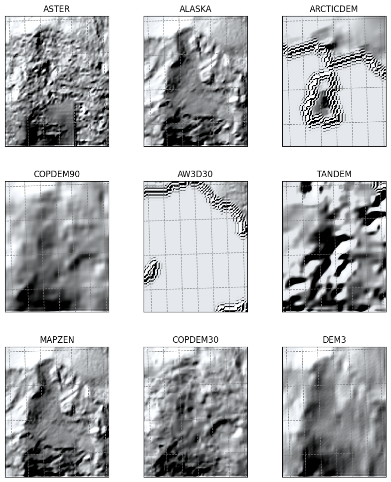
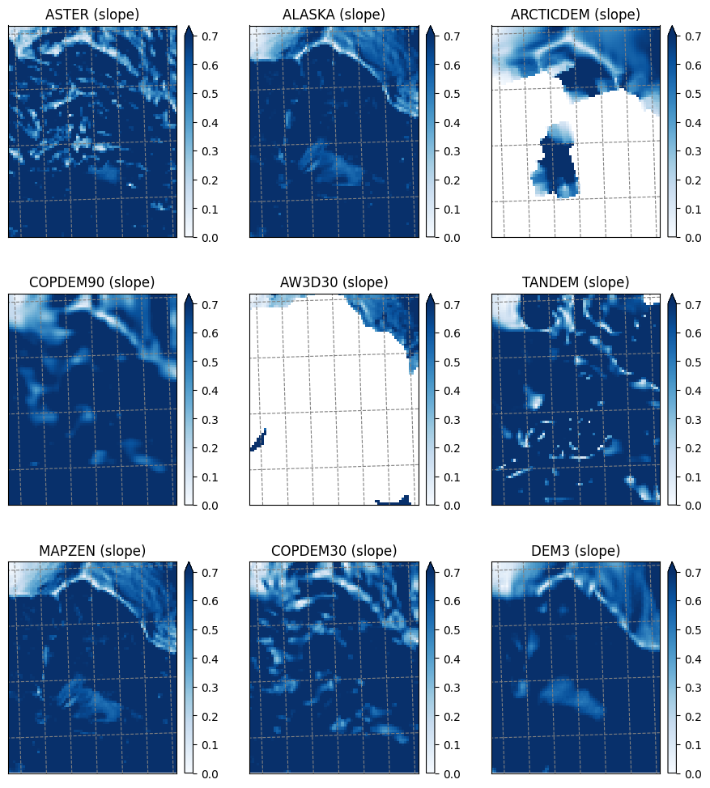
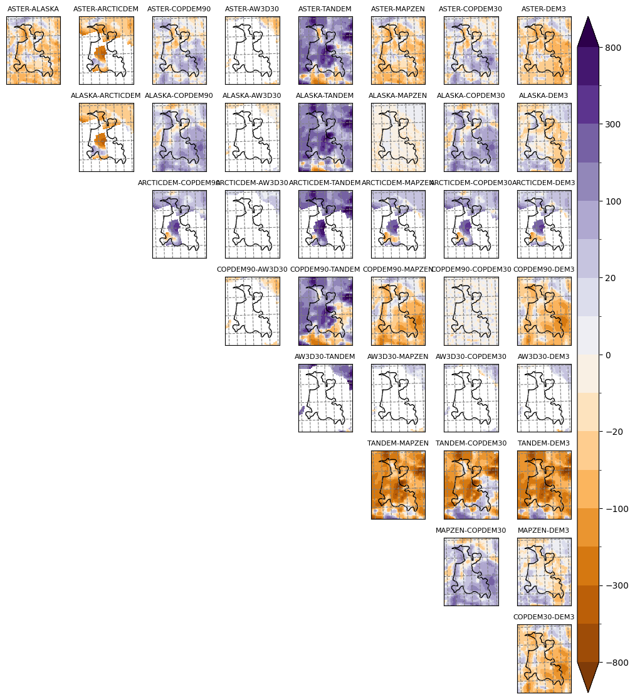
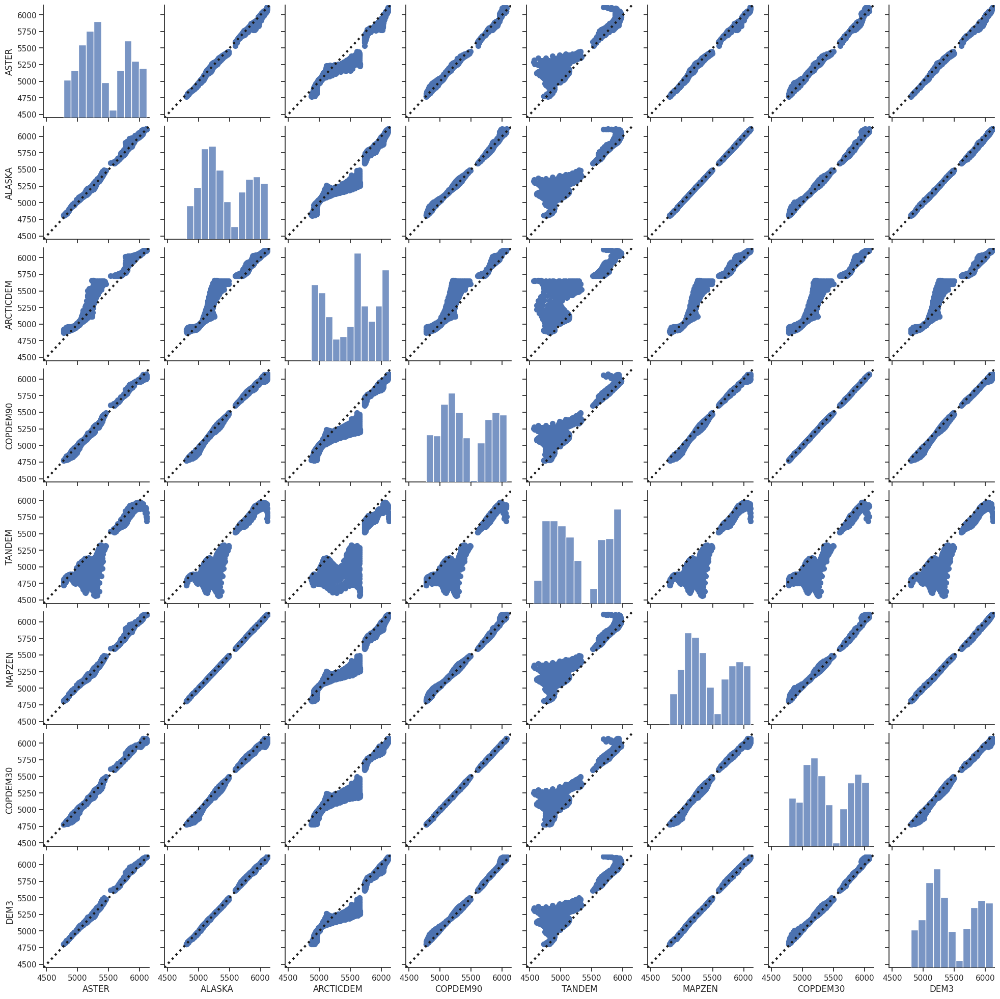

RGI-TOPO for RGI 7.0#
OGGM was used to generate the topography data used to compute the topographical attributes and the centerlines products for RGI v7.0.
Here we show how to access this data from OGGM.
Input parameters#
This notebook can be run as a script with parameters using papermill, but it is not necessary. The following cell contains the parameters you can choose from:
# The RGI Id of the glaciers you want to look for
# Use the original shapefiles or the GLIMS viewer to check for the ID: https://www.glims.org/maps/glims
rgi_id = 'RGI2000-v7.0-G-01-06486' # Denali
# The default is to test for all sources available for this glacier
# Set to a list of source names to override this
sources = None
# Where to write the plots. Default is in the current working directory
plot_dir = f'outputs/{rgi_id}'
# The RGI version to use
# V62 is an unofficial modification of V6 with only minor, backwards compatible modifications
prepro_rgi_version = 62
# Size of the map around the glacier. Currently only 10 and 40 are available
prepro_border = 10
# Degree of processing level. Currently only 1 is available.
from_prepro_level = 1
Check input and set up#
# The sources can be given as parameters
if sources is not None and isinstance(sources, str):
sources = sources.split(',')
# Plotting directory as well
if not plot_dir:
plot_dir = './' + rgi_id
import os
plot_dir = os.path.abspath(plot_dir)
from oggm import cfg, utils, workflow, tasks, graphics, GlacierDirectory
import pandas as pd
import numpy as np
import xarray as xr
import rioxarray as rioxr
import geopandas as gpd
import salem
import matplotlib.pyplot as plt
from mpl_toolkits.axes_grid1 import AxesGrid
import itertools
from oggm.utils import DEM_SOURCES
from oggm.workflow import init_glacier_directories
# Make sure the plot directory exists
utils.mkdir(plot_dir);
# Use OGGM to download the data
cfg.initialize()
cfg.PATHS['working_dir'] = utils.gettempdir(dirname='OGGM-RGITOPO-RGI7', reset=True)
cfg.PARAMS['use_intersects'] = False
2025-04-16 10:57:32: oggm.cfg: Reading default parameters from the OGGM `params.cfg` configuration file.
2025-04-16 10:57:32: oggm.cfg: Multiprocessing switched OFF according to the parameter file.
2025-04-16 10:57:32: oggm.cfg: Multiprocessing: using all available processors (N=4)
2025-04-16 10:57:32: oggm.cfg: PARAMS['use_intersects'] changed from `True` to `False`.
Download the data using OGGM utility functions#
Note that you could reach the same goal by downloading the data manually from
# URL of the preprocessed GDirs
gdir_url = 'https://cluster.klima.uni-bremen.de/~oggm/gdirs/oggm_v1.6/rgitopo/2023.1/'
# We use OGGM to download the data
gdir = init_glacier_directories([rgi_id], from_prepro_level=1, prepro_border=10, prepro_rgi_version='70', prepro_base_url=gdir_url)[0]
2025-04-16 10:57:33: oggm.workflow: init_glacier_directories from prepro level 1 on 1 glaciers.
2025-04-16 10:57:33: oggm.workflow: Execute entity tasks [gdir_from_prepro] on 1 glaciers
gdir
<oggm.GlacierDirectory>
RGI id: RGI2000-v7.0-G-01-06486
Region: 01: Alaska
Subregion: 01-02: Alaska Range (Wrangell/Kilbuck)
Glacier type: Glacier
Terminus type: Not assigned
Status: Glacier
Area: 0.961122833004822 km2
Lon, Lat: (-151.0094740399913, 63.061062)
Grid (nx, ny): (70, 88)
Grid (dx, dy): (24.0, -24.0)
Read the DEMs and store them all in a dataset#
if sources is None:
sources = [src for src in os.listdir(gdir.dir) if src in utils.DEM_SOURCES]
print('RGI ID:', rgi_id)
print('Available DEM sources:', sources)
print('Plotting directory:', plot_dir)
RGI ID: RGI2000-v7.0-G-01-06486
Available DEM sources: ['ASTER', 'ALASKA', 'ARCTICDEM', 'COPDEM90', 'AW3D30', 'TANDEM', 'MAPZEN', 'COPDEM30', 'DEM3']
Plotting directory: /__w/tutorials/tutorials/notebooks/tutorials/outputs/RGI2000-v7.0-G-01-06486
# We use xarray to store the data
ods = xr.Dataset()
for src in sources:
demfile = os.path.join(gdir.dir, src) + '/dem.tif'
with rioxr.open_rasterio(demfile) as ds:
data = ds.sel(band=1).load() * 1.
ods[src] = data.where(data > -100, np.nan)
sy, sx = np.gradient(ods[src], gdir.grid.dx, gdir.grid.dx)
ods[src + '_slope'] = ('y', 'x'), np.arctan(np.sqrt(sy**2 + sx**2))
with rioxr.open_rasterio(gdir.get_filepath('glacier_mask')) as ds:
ods['mask'] = ds.sel(band=1).load()
# Decide on the number of plots and figure size
ns = len(sources)
x_size = 12
n_cols = 3
n_rows = -(-ns // n_cols)
y_size = x_size / n_cols * n_rows
Raw topography data#
smap = salem.graphics.Map(gdir.grid, countries=False)
smap.set_shapefile(gdir.read_shapefile('outlines'))
smap.set_plot_params(cmap='topo')
smap.set_lonlat_contours(add_tick_labels=False)
smap.set_plot_params(vmin=np.nanquantile([ods[s].min() for s in sources], 0.25),
vmax=np.nanquantile([ods[s].max() for s in sources], 0.75))
fig = plt.figure(figsize=(x_size, y_size))
grid = AxesGrid(fig, 111,
nrows_ncols=(n_rows, n_cols),
axes_pad=0.7,
cbar_mode='each',
cbar_location='right',
cbar_pad=0.1
)
for i, s in enumerate(sources):
data = ods[s]
smap.set_data(data)
ax = grid[i]
smap.visualize(ax=ax, addcbar=False, title=s)
if np.isnan(data).all():
grid[i].cax.remove()
continue
cax = grid.cbar_axes[i]
smap.colorbarbase(cax)
# take care of uneven grids
if ax != grid[-1] and not grid[-1].title.get_text():
grid[-1].remove()
grid[-1].cax.remove()
if ax != grid[-2] and not grid[-2].title.get_text():
grid[-2].remove()
grid[-2].cax.remove()
plt.savefig(os.path.join(plot_dir, 'dem_topo_color.png'), dpi=150, bbox_inches='tight')

Shaded relief#
fig = plt.figure(figsize=(x_size, y_size))
grid = AxesGrid(fig, 111,
nrows_ncols=(n_rows, n_cols),
axes_pad=0.7,
cbar_location='right',
cbar_pad=0.1
)
smap.set_plot_params(cmap='Blues')
smap.set_shapefile()
for i, s in enumerate(sources):
data = ods[s].copy().where(np.isfinite(ods[s]), 0)
smap.set_data(data * 0)
ax = grid[i]
smap.set_topography(data)
smap.visualize(ax=ax, addcbar=False, title=s)
# take care of uneven grids
if ax != grid[-1] and not grid[-1].title.get_text():
grid[-1].remove()
grid[-1].cax.remove()
if ax != grid[-2] and not grid[-2].title.get_text():
grid[-2].remove()
grid[-2].cax.remove()
plt.savefig(os.path.join(plot_dir, 'dem_topo_shade.png'), dpi=150, bbox_inches='tight')

Slope#
fig = plt.figure(figsize=(x_size, y_size))
grid = AxesGrid(fig, 111,
nrows_ncols=(n_rows, n_cols),
axes_pad=0.7,
cbar_mode='each',
cbar_location='right',
cbar_pad=0.1
)
smap.set_topography();
smap.set_plot_params(vmin=0, vmax=0.7, cmap='Blues')
for i, s in enumerate(sources):
data = ods[s + '_slope']
smap.set_data(data)
ax = grid[i]
smap.visualize(ax=ax, addcbar=False, title=s + ' (slope)')
cax = grid.cbar_axes[i]
smap.colorbarbase(cax)
# take care of uneven grids
if ax != grid[-1] and not grid[-1].title.get_text():
grid[-1].remove()
grid[-1].cax.remove()
if ax != grid[-2] and not grid[-2].title.get_text():
grid[-2].remove()
grid[-2].cax.remove()
plt.savefig(os.path.join(plot_dir, 'dem_slope.png'), dpi=150, bbox_inches='tight')

Some simple statistics about the DEMs#
df = pd.DataFrame()
for s in sources:
df[s] = ods[s].data.flatten()[ods.mask.data.flatten() == 1]
dfs = pd.DataFrame()
for s in sources:
dfs[s] = ods[s + '_slope'].data.flatten()[ods.mask.data.flatten() == 1]
dfs = df.describe()
dfs.loc['range'] = dfs.loc['max'] - dfs.loc['min']
dfs
| ASTER | ALASKA | ARCTICDEM | COPDEM90 | AW3D30 | TANDEM | MAPZEN | COPDEM30 | DEM3 | |
|---|---|---|---|---|---|---|---|---|---|
| count | 1671.000000 | 1671.000000 | 767.000000 | 1671.000000 | 0.0 | 1671.000000 | 1671.000000 | 1671.000000 | 1671.000000 |
| mean | 5295.587672 | 5316.735352 | 5529.413086 | 5277.694824 | NaN | 5153.806152 | 5319.226212 | 5277.514160 | 5328.549372 |
| std | 351.229245 | 351.459656 | 393.222046 | 370.293671 | NaN | 388.357605 | 350.840381 | 370.142792 | 351.724101 |
| min | 4565.000000 | 4610.906738 | 4871.422852 | 4584.852539 | NaN | 4497.636719 | 4622.000000 | 4585.657715 | 4644.000000 |
| 25% | 5026.500000 | 5047.515381 | 5111.490234 | 4980.320312 | NaN | 4837.172607 | 5050.000000 | 4982.135010 | 5058.000000 |
| 50% | 5250.000000 | 5255.337402 | 5613.539551 | 5231.637207 | NaN | 5044.266113 | 5258.000000 | 5231.779785 | 5259.000000 |
| 75% | 5543.000000 | 5578.190430 | 5869.918945 | 5564.726562 | NaN | 5441.289551 | 5578.500000 | 5562.813232 | 5590.000000 |
| max | 6113.000000 | 6116.865234 | 6126.963379 | 6073.276855 | NaN | 5975.219727 | 6111.000000 | 6073.898438 | 6120.000000 |
| range | 1548.000000 | 1505.958496 | 1255.540527 | 1488.424316 | NaN | 1477.583008 | 1489.000000 | 1488.240723 | 1476.000000 |
Comparison matrix plot#
# Table of differences between DEMS
df_diff = pd.DataFrame()
done = []
for s1, s2 in itertools.product(sources, sources):
if s1 == s2:
continue
if (s2, s1) in done:
continue
df_diff[s1 + '-' + s2] = df[s1] - df[s2]
done.append((s1, s2))
# Decide on plot levels
max_diff = df_diff.quantile(0.99).max()
base_levels = np.array([-8, -5, -3, -1.5, -1, -0.5, -0.2, -0.1, 0, 0.1, 0.2, 0.5, 1, 1.5, 3, 5, 8])
if max_diff < 10:
levels = base_levels
elif max_diff < 100:
levels = base_levels * 10
elif max_diff < 1000:
levels = base_levels * 100
else:
levels = base_levels * 1000
levels = [l for l in levels if abs(l) < max_diff]
if max_diff > 10:
levels = [int(l) for l in levels]
levels
[-800,
-500,
-300,
-150,
-100,
-50,
-20,
-10,
0,
10,
20,
50,
100,
150,
300,
500,
800]
smap.set_plot_params(levels=levels, cmap='PuOr', extend='both')
smap.set_shapefile(gdir.read_shapefile('outlines'))
fig = plt.figure(figsize=(14, 14))
grid = AxesGrid(fig, 111,
nrows_ncols=(ns - 1, ns - 1),
axes_pad=0.3,
cbar_mode='single',
cbar_location='right',
cbar_pad=0.1
)
done = []
for ax in grid:
ax.set_axis_off()
for s1, s2 in itertools.product(sources, sources):
if s1 == s2:
continue
if (s2, s1) in done:
continue
data = ods[s1] - ods[s2]
ax = grid[sources.index(s1) * (ns - 1) + sources[1:].index(s2)]
ax.set_axis_on()
smap.set_data(data)
smap.visualize(ax=ax, addcbar=False)
done.append((s1, s2))
ax.set_title(s1 + '-' + s2, fontsize=8)
cax = grid.cbar_axes[0]
smap.colorbarbase(cax);
plt.savefig(os.path.join(plot_dir, 'dem_diffs.png'), dpi=150, bbox_inches='tight')

Comparison scatter plot#
import seaborn as sns
sns.set(style="ticks")
l1, l2 = (utils.nicenumber(df.min().min(), binsize=50, lower=True),
utils.nicenumber(df.max().max(), binsize=50, lower=False))
def plot_unity(xdata, ydata, **kwargs):
points = np.linspace(l1, l2, 100)
plt.gca().plot(points, points, color='k', marker=None,
linestyle=':', linewidth=3.0)
g = sns.pairplot(df.dropna(how='all', axis=1).dropna(), plot_kws=dict(s=50, edgecolor="C0", linewidth=1));
g.map_offdiag(plot_unity)
for asx in g.axes:
for ax in asx:
ax.set_xlim((l1, l2))
ax.set_ylim((l1, l2))
plt.savefig(os.path.join(plot_dir, 'dem_scatter.png'), dpi=150, bbox_inches='tight')

Table statistics#
df.describe()
| ASTER | ALASKA | ARCTICDEM | COPDEM90 | AW3D30 | TANDEM | MAPZEN | COPDEM30 | DEM3 | |
|---|---|---|---|---|---|---|---|---|---|
| count | 1671.000000 | 1671.000000 | 767.000000 | 1671.000000 | 0.0 | 1671.000000 | 1671.000000 | 1671.000000 | 1671.000000 |
| mean | 5295.587672 | 5316.735352 | 5529.413086 | 5277.694824 | NaN | 5153.806152 | 5319.226212 | 5277.514160 | 5328.549372 |
| std | 351.229245 | 351.459656 | 393.222046 | 370.293671 | NaN | 388.357605 | 350.840381 | 370.142792 | 351.724101 |
| min | 4565.000000 | 4610.906738 | 4871.422852 | 4584.852539 | NaN | 4497.636719 | 4622.000000 | 4585.657715 | 4644.000000 |
| 25% | 5026.500000 | 5047.515381 | 5111.490234 | 4980.320312 | NaN | 4837.172607 | 5050.000000 | 4982.135010 | 5058.000000 |
| 50% | 5250.000000 | 5255.337402 | 5613.539551 | 5231.637207 | NaN | 5044.266113 | 5258.000000 | 5231.779785 | 5259.000000 |
| 75% | 5543.000000 | 5578.190430 | 5869.918945 | 5564.726562 | NaN | 5441.289551 | 5578.500000 | 5562.813232 | 5590.000000 |
| max | 6113.000000 | 6116.865234 | 6126.963379 | 6073.276855 | NaN | 5975.219727 | 6111.000000 | 6073.898438 | 6120.000000 |
df.corr()
| ASTER | ALASKA | ARCTICDEM | COPDEM90 | AW3D30 | TANDEM | MAPZEN | COPDEM30 | DEM3 | |
|---|---|---|---|---|---|---|---|---|---|
| ASTER | 1.000000 | 0.997280 | 0.960869 | 0.995702 | NaN | 0.923299 | 0.997390 | 0.995283 | 0.997277 |
| ALASKA | 0.997280 | 1.000000 | 0.957513 | 0.996075 | NaN | 0.930687 | 0.999929 | 0.995697 | 0.998666 |
| ARCTICDEM | 0.960869 | 0.957513 | 1.000000 | 0.957821 | NaN | 0.858754 | 0.957611 | 0.957143 | 0.957046 |
| COPDEM90 | 0.995702 | 0.996075 | 0.957821 | 1.000000 | NaN | 0.928387 | 0.996033 | 0.999891 | 0.995559 |
| AW3D30 | NaN | NaN | NaN | NaN | NaN | NaN | NaN | NaN | NaN |
| TANDEM | 0.923299 | 0.930687 | 0.858754 | 0.928387 | NaN | 1.000000 | 0.930963 | 0.928303 | 0.934220 |
| MAPZEN | 0.997390 | 0.999929 | 0.957611 | 0.996033 | NaN | 0.930963 | 1.000000 | 0.995645 | 0.998911 |
| COPDEM30 | 0.995283 | 0.995697 | 0.957143 | 0.999891 | NaN | 0.928303 | 0.995645 | 1.000000 | 0.995141 |
| DEM3 | 0.997277 | 0.998666 | 0.957046 | 0.995559 | NaN | 0.934220 | 0.998911 | 0.995141 | 1.000000 |
df_diff.describe()
| ASTER-ALASKA | ASTER-ARCTICDEM | ASTER-COPDEM90 | ASTER-AW3D30 | ASTER-TANDEM | ASTER-MAPZEN | ASTER-COPDEM30 | ASTER-DEM3 | ALASKA-ARCTICDEM | ALASKA-COPDEM90 | ... | AW3D30-TANDEM | AW3D30-MAPZEN | AW3D30-COPDEM30 | AW3D30-DEM3 | TANDEM-MAPZEN | TANDEM-COPDEM30 | TANDEM-DEM3 | MAPZEN-COPDEM30 | MAPZEN-DEM3 | COPDEM30-DEM3 | |
|---|---|---|---|---|---|---|---|---|---|---|---|---|---|---|---|---|---|---|---|---|---|
| count | 1671.000000 | 767.000000 | 1671.000000 | 0.0 | 1671.000000 | 1671.000000 | 1671.000000 | 1671.000000 | 767.000000 | 1671.000000 | ... | 0.0 | 0.0 | 0.0 | 0.0 | 1671.000000 | 1671.000000 | 1671.000000 | 1671.000000 | 1671.000000 | 1671.000000 |
| mean | -21.148171 | -102.185113 | 17.892747 | NaN | 141.781450 | -23.638540 | 18.073272 | -32.961700 | -85.975136 | 39.040920 | ... | NaN | NaN | NaN | NaN | -165.419989 | -123.708183 | -174.743149 | 41.711812 | -9.323160 | -51.034972 |
| std | 25.915689 | 108.948818 | 38.488241 | NaN | 149.341491 | 25.367381 | 39.801988 | 25.941984 | 113.401772 | 37.098961 | ... | NaN | NaN | NaN | NaN | 142.198023 | 144.721756 | 138.969170 | 38.776733 | 16.420294 | 40.056016 |
| min | -137.751953 | -428.646973 | -111.338867 | NaN | -85.662109 | -130.000000 | -123.904297 | -128.000000 | -401.538574 | -42.941895 | ... | NaN | NaN | NaN | NaN | -851.888672 | -812.099121 | -872.888672 | -38.260254 | -60.000000 | -173.853027 |
| 25% | -36.852539 | -171.116211 | -7.423828 | NaN | 44.948730 | -40.000000 | -8.449463 | -48.000000 | -143.909668 | 10.340332 | ... | NaN | NaN | NaN | NaN | -214.740479 | -178.104980 | -217.682861 | 13.209717 | -20.000000 | -73.800049 |
| 50% | -19.398438 | -71.489746 | 12.738770 | NaN | 100.195801 | -22.000000 | 13.353027 | -29.000000 | -58.945312 | 33.313477 | ... | NaN | NaN | NaN | NaN | -123.718750 | -95.392578 | -133.516602 | 34.193848 | -10.000000 | -39.264160 |
| 75% | -1.874023 | -28.157715 | 40.641357 | NaN | 193.438232 | -6.000000 | 42.359863 | -19.000000 | -5.880127 | 65.058350 | ... | NaN | NaN | NaN | NaN | -71.849121 | -18.154541 | -84.589355 | 69.063965 | 0.000000 | -22.958496 |
| max | 55.279785 | 121.276367 | 124.032227 | NaN | 829.932129 | 54.000000 | 128.154297 | 52.000000 | 147.653809 | 130.026367 | ... | NaN | NaN | NaN | NaN | 16.507324 | 84.786133 | 14.181152 | 137.803711 | 47.000000 | 26.395508 |
8 rows × 36 columns
df_diff.abs().describe()
| ASTER-ALASKA | ASTER-ARCTICDEM | ASTER-COPDEM90 | ASTER-AW3D30 | ASTER-TANDEM | ASTER-MAPZEN | ASTER-COPDEM30 | ASTER-DEM3 | ALASKA-ARCTICDEM | ALASKA-COPDEM90 | ... | AW3D30-TANDEM | AW3D30-MAPZEN | AW3D30-COPDEM30 | AW3D30-DEM3 | TANDEM-MAPZEN | TANDEM-COPDEM30 | TANDEM-DEM3 | MAPZEN-COPDEM30 | MAPZEN-DEM3 | COPDEM30-DEM3 | |
|---|---|---|---|---|---|---|---|---|---|---|---|---|---|---|---|---|---|---|---|---|---|
| count | 1671.000000 | 767.000000 | 1671.000000 | 0.0 | 1671.000000 | 1671.000000 | 1671.000000 | 1671.000000 | 767.000000 | 1671.000000 | ... | 0.0 | 0.0 | 0.0 | 0.0 | 1671.000000 | 1671.000000 | 1671.000000 | 1671.000000 | 1671.000000 | 1671.000000 |
| mean | 26.224301 | 112.711556 | 31.869296 | NaN | 147.605664 | 27.788151 | 32.801881 | 35.226212 | 105.086456 | 42.339176 | ... | NaN | NaN | NaN | NaN | 165.650691 | 135.184494 | 174.815853 | 44.739207 | 15.171155 | 52.023959 |
| std | 20.760783 | 98.004051 | 28.025463 | NaN | 143.584187 | 20.735849 | 28.886490 | 22.770194 | 95.936180 | 33.283024 | ... | NaN | NaN | NaN | NaN | 141.929044 | 134.057739 | 138.877648 | 35.238571 | 11.238222 | 38.762088 |
| min | 0.001953 | 0.155762 | 0.000000 | NaN | 0.175293 | 0.000000 | 0.005371 | 0.000000 | 0.155273 | 0.000000 | ... | NaN | NaN | NaN | NaN | 0.151367 | 0.002441 | 0.848633 | 0.117188 | 0.000000 | 0.012207 |
| 25% | 11.052246 | 41.791260 | 10.204102 | NaN | 49.170898 | 12.000000 | 11.155762 | 20.000000 | 36.557861 | 14.249756 | ... | NaN | NaN | NaN | NaN | 71.849121 | 38.805664 | 84.589355 | 16.361816 | 6.000000 | 23.231689 |
| 50% | 21.200195 | 73.289062 | 22.945801 | NaN | 100.195801 | 24.000000 | 23.466309 | 29.000000 | 65.577148 | 33.496582 | ... | NaN | NaN | NaN | NaN | 123.718750 | 95.392578 | 133.516602 | 34.610840 | 12.000000 | 39.264160 |
| 75% | 37.241211 | 171.116211 | 46.310059 | NaN | 193.438232 | 40.000000 | 47.615723 | 48.000000 | 144.205811 | 65.058350 | ... | NaN | NaN | NaN | NaN | 214.740479 | 178.104980 | 217.682861 | 69.063965 | 22.000000 | 73.800049 |
| max | 137.751953 | 428.646973 | 124.032227 | NaN | 829.932129 | 130.000000 | 128.154297 | 128.000000 | 401.538574 | 130.026367 | ... | NaN | NaN | NaN | NaN | 851.888672 | 812.099121 | 872.888672 | 137.803711 | 60.000000 | 173.853027 |
8 rows × 36 columns
What’s next?#
return to the OGGM documentation
back to the table of contents